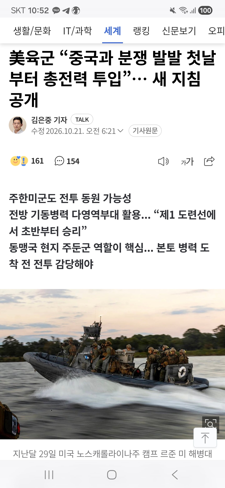

우리나라를 전쟁 거점으로 삼는다는거 같음
이러면 반강제 참전으러 봐야되지 않나
양안전쟁 터지면 중국에서 수입하는 반도체
광물 원자재 수입 올스톱
육로 항로 다막히고 삼하닉 공장 셧다운에
경제마비될듯
미전문가들은 대만 다음으로 피해보는 국가가 한국이라고
콕집어 말했으니 양안터지면 나라 뒤집어질듯
장기전으로 가면 코스피 1900 코스닥 300 예상

우리나라를 전쟁 거점으로 삼는다는거 같음
이러면 반강제 참전으러 봐야되지 않나
양안전쟁 터지면 중국에서 수입하는 반도체
광물 원자재 수입 올스톱
육로 항로 다막히고 삼하닉 공장 셧다운에
경제마비될듯
미전문가들은 대만 다음으로 피해보는 국가가 한국이라고
콕집어 말했으니 양안터지면 나라 뒤집어질듯
장기전으로 가면 코스피 1900 코스닥 300 예상
존나 짧게 써버렸지만 일본은 사실상 100% 참전각이고 우리나라는 참전 가능성이 존나 높다 라는게 미국 시나리오임
그래서 중국이 가장 원하는게 조지아 전쟁처럼 미국과 서방의 개입 전에 대만 점령을 끝내버린다로 추정되고
CSIS의 워게임 시나리오 기준으로 주일미군 기지의 사용 가능이 승리의 필수조건이고 사용 불가가 패배요소로 나오고 미군의 참전이 없으면 대만군은 무조건 패배한다임
외교안보연구소에서도 우리나라는 전쟁억제에 최대한 노력 -> 미국-중국의 작은 충돌은 미군에 제한적 군사적 도움-> 미국과 중국의 군사적 충돌이 격화시 우리도 미군과 군사적 연루를 회피하기 어렵다고 보고 있음
사실상 우리나라와 일본은 정하는 게 불가능한 전쟁임 두 국가 모두 에너지의 90%를 수입하는 방향이 대만임
ㅋㅋㅋㅋㅋㅋ 방구석 전문가 납셨노 ㅋㅋㅋ 주한미군 주일미군 기지 공격하면, 한국이랑 일본에 적극적인 참전 명분 만들어주는건데 ㅋㅋㅋㅋ 니같음 하겠냐? 차라리 북한시켜서 우리나라 공격하게하지 ㅋㅋ
지금 이상태면 그냥 미드오픈이요~
뭔 개 븅신같은 글이냐
그럼 미군이 우리나라에 주둔하는게
우리나라”만“ 지켜주는 조건이겠음?
뭔 전쟁거점이야 애초에 우리나라 미군 주둔이유가
전략적 요충지라서 그런거잖아
그래서 미국이 돈 쓰면서 주둔하는거고
우리는 이것으로 안보 이득을 보는거고
가까이 주둔하는 주한미군이 대만 도우러 가는건 당연한건데
어떤 음흉한 쓰레기 새끼들은
어떻게든 우리나라에서 미군 철수시키려고
선동하고 으휴
이 병신들은 나라가 불바다에 휩싸여도 미국 형님이 하겠다고 하면 잘한다고 박수치고 똥꼬도 내줄 새끼들이네 ㅋㅋㅋㅋ
한국전쟁 때 우리 살려주고 동맹인데 같이 가야지
너나 가서 갈갈이 당해.
거기서 빠지면 우린 중국의 다음 타겟이 되는데? 중국 측이야?
양안전쟁에 참전하면 한반도 불바다 안 일어나냐 병신아? 니가 한반도 불바다 나길 바라는 홍위병이지. 누구보고 중국측 타령이야 ㅋㅋㅋ
참전 안해도 다음 불바다야 그 땐 미국 동맹도 없는 상태지
주한미국이 자꾸 동북아 전체에 전력 투사하려고 간보는걸 오케이 하면, 중국이 작정하고 전쟁 일으켰을 때 주한미군 기지 안 때린데?
양안전쟁 나면 참전해야 한다고 주장해서 한반도 비우려고 하는거 보니까 니가 짱O 새끼거나 북한 간첩이지.
제발 니네 나라 안에서만 놀아라 더러운 바퀴벌레 새끼들아.
한반도를 언제 다 비운다고 했냐? 여기도 지켜야지 그럼 양안전쟁 참전 안한 후 미국 동맹 깨지는 데? 그 이후 생각은 있음? 지금 잘나가는 반도체 장비부터 스탑이야
주한미군도 비우고, 남한 전력도 참전한다고 비웠는데 한반도가 멀쩡도 하겠다. 주한미군이 양안전쟁에 전력투사 하러 가면 우리는 한반도 지키겠다 소리를 해야지 참전 ㅇㅈㄹ 하네. 니는 그냥 생각이 없는거 같은데.
너 보다 생각 많을듯 ㅋㅋ 그리고 왜 ‘남한’이라고 함? 우리나라라고 해야지?
너 이해하기 편하라고, 니가 짱인지 북괴 간첩인지는 몰라도 '우리 군'이라고 하면 헷갈릴거 아니야.
니가 짱이지 미국 동맹 깨지면 제일 이득보는건 짱인데
그런데 중국놈들도 대가리 굴리는게 있는데 전쟁전에 뭔가 북괴를 조종해서
남쪽에 대규모 국지전이라도 걸거 같긴하다 ... 주한민군이나 국군이 대만쪽에
신경을 덜쓰게하기 위해서 ...
애초에 한미상호방위 조약에서 범위 자체가 '태평양'임 ㅋㅋㅋ 근데 이 문장을 넣었을 때는 미국도 딱히 한국이 도움이 될 거라고 생각 안 했고. 한국은 만약에 통일하고 나면 중국, 러시아로부터 보호 받을 수 있는 한미상호방위조약이 필요하니 '태평양'까지 집어 넣은 건데. 그걸 받아들인 건 과거 우리나라이긴 해.
중국은 빠르게 대만 지배하고 싶고, 미국이랑 전쟁 피하고 싶을텐데
미국도 TSMC만 빼내오고 싶고 대만 알빠노 아닌가....
지금 이란전에서 확고히 승기를 못잡는게 중국이랑 전쟁도 못하겠다는 이유가 되지 않을까
항로 다 막히는건 아님 필리핀 쪽 꺾고 돌아가는 루트도 있어
것보다 미국이 대만전쟁에 뛰어들 의지가 있긴함? 백악관말하는거보면 애매하던데
어차피 양안전쟁 터지면 세계대전각이라 다같이 평등하게 망함
양안전쟁에서 발빼면 한미동맹도 의미가 없는건데 아직도 중립외교 이러는애들보면 웃음만나옴
서희장군 생각하고 외교로 다 해결된다고 믿는 바보들 아니면 항복을 원하는 매국노들임
셰셰~
양안전쟁에 미국이 적극적으로 개입하는데다 알빠노 박아놓고 미국이 우리나라는 지켜줄거라 믿는건 꽃밭도 아니고 그냥 약빤거 아니냐 ㅋㅋㅋ
뭔 ㅆㅂ 양안전쟁났는데 코스피코스닥 ㅇㅈㄹ하네 둘 다 0 안 되면 다행임
예방차원에서 선제타격작전으로 북을치자
항로는 왜 막히는거임?
육로는 애초에 막혀있엇고...
우리 남쪽으로 중국이랑 가까워서그런가
우리나라에서 들어오는 석유 90퍼는 남중국해를 통해서옴
남중국해야 살짝돌아오면되는데
남해쪽이 문제네 일본통해서 들어와야하네
작계세웠으면 방위비 그만걷고 체제비내라
방위비 올려 처받았으면 피해안주고 항공모함에서 알아서 하시길 노머고새끼는
미국 일본 다 좆됨
ㅇㅇ 반 강제 참전맞음.
양안전쟁하면 또 뭐 우러전처럼 첨엔 중국욕좀하면서 물자지원이나 좀 해주다가 다같이 좆되긴 싫으니까 뒷짐지고 엣헴하지않겠나... 수십년전처럼 이념싸움으로 꼴박하고 그러진 않을거같기도함 중국대만만 ufc걸고 주변국은 반쯤 wwe할듯
이건 다들 알고 있었던거 아닌가 이제와서 새삼스래 ㅋㅋ
주한미군기지에 미사일 떨어지는 순간부터 자동참전이지 한국 가만 내비두겠나
양안전쟁 터지면 엄 중 경 고
양안전쟁 터지면 주한미군 당연히 참전하겠지
국군은 시팔 북괴막아야지 미군없는데
대만과 한국이 반도체 생산이 막힐 정도의 밸류체인 셧다운이면 사실상 전세계 IT 산업이 멈추는거라서 이게 코스피 코스닥 폭락같은 지엽적인 지정학 이벤트로 보면 안된다. 세계가 같이 꼬라박는거야
전쟁이 나면 후폭풍이 너무 쌔서
미국도 전쟁을 막기 위해서는 최선을 다할 거는 확실할거 같은데
실제 전쟁이 일어난다면 미국이 적극적으로 참전을 할까 라는 생각은 들지가 않네
자꾸 중국이 한국과 전쟁하고 싶어안달난 나라라는 듯한 세뇌를 시키려는 애들이 보이네
오히려 미국은 한국에 있는 기지에서 아무짓도 안했는데
짱꺠가 미사일 날리길 바라야될 입장 아닌가 ㅋㅋ
그래서 미국은 주한미군기지 안에선 아무것도 안해야되는 입장임
안에 있는 병력을 빼서 대만에 재배치 하는것 말곤 방법없음
절대로 말레이시아같이 그냥 교화롭게 돌아갈거라생각하지말아라 안그런나라가 더많다.
애초에 북한이 핵 쓰지 않는 이상 북한국은 한국으로 충분해서 그냥 주한미군 보낼듯
양안전쟁 이야기 나올 때, 한국이 참전해야 한다 말아야 한다. 이런 말 자주 나오곤 했는데. 내 입장은 그 때나 지금이나 똑같음. 우리나라가 정할 수 있는 문제가 아니라는 거. 양안전쟁이 터졌는데, 미군이 참전한다. 그러면 미국은 어떻게든 우리나라가 참전하게 만들거임.
그러기 싫으면
한미상호방위조약을 포기하던가 해야 됨. 사실, 포기해도 참전할 방법을 만들겠지.
뭐 앎?
진짜 터지면 그냥 그레이트 리셋 볼 것 같읃데 ㅋㅋ
그럼 미국을 무조건 참전시키겠다는 마인드인데 그래도 되는거임? 한국이야 다른나라들에게 버려도 되는 패지만
미국이 동맹국 소환해라 라고 해버리면 그들은 그건 무시하기 어려울탠데...?